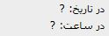
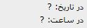

این صفحه این امکان را به شما میدهد که بتوانید برای کالا و یا محصول خود لیست سفارش مشخص کنید. و هر بار با مراجعه به این صفحه میتوانید از کسری موجودی خود اطلاع پیدا کرده و نسبت سفارش کالا اقدام نمایید.
صفحه لیست های سفارش دارای 3 تب «تعریف لیست»، «تعیین نقطه سفارش» و «محاسبه موجودی و صدور سند» می باشد که به صورت پیش فرض هنگام ورود به این صفحه تب «تعریف لیست» فعال می باشد که ابتدا به شرح این تب می پردازیم:
این تب شامل نام لیست های قیمت تعریف شده می باشد. برای اضافه کردن یک لیست قیمت جدید بر روی گزینه اضافه از نوار ابزار کلیک کنید تا فرم ایجاد تعریف لیست نمایان شود:

بعد از تعریف عنوان لیست در این قسمت باید کالا ها را با تعداد مورد نظر به این لیست اختصاص دهید. برای اینکار باید تب «تعیین نقطه های سفارش» را انتخاب نمایید:

در شکل بالا در سمت راست لیست هایی که در تب «تعریف لیست» تعریف کرده اید نمایش داده می شود که در شکل بالا «لیست سفارش مواد» در حالت انتخاب قرار دارد قسمت موارد انتخاب نشده لیست کالای تعریف شده را نشان میدهد با انتخاب یک لیست از سمت راست می توانید کالاهای مربوط به آن را از قسمت موارد انتخاب نشده انتخاب کنید، حال با زدن کلید پنجره
 زیر ظاهر می شود:
زیر ظاهر می شود:

پس از وارد کردن نقطه سفارش و موجودی مطلوب و زدن تایید کالای شما به جدول سمت راست منتقل می شود.
برای خارج کردن یک کالا از لیست انتخابی کافی است که کالای مورد نظر را از ستون موارد انتخاب شده انتخاب کنید و بر روی کلید
 کلیک کنید، پنجره ای که اطمینان شما را از این اقدام سوال می کند نمایان می شود. با کلیک بر روی بله کالای مورد نظر از لیست حذف می شود.
کلیک کنید، پنجره ای که اطمینان شما را از این اقدام سوال می کند نمایان می شود. با کلیک بر روی بله کالای مورد نظر از لیست حذف می شود.

 ویرایش تعداد: اگر نیاز داشتید نقطه سفارش و موجودی مطلوب کالایی را تغییر دهید از جدول موارد انتخاب شده کالای مورد نظرتان را انتخاب کنید و روی گزینه ویرایش تعداد کلیک کنید، در آن صورت دوباره پنجره محاوره ثبت تعداد که در بالاگفته شد نمایان می شود و می توانید تعداد کالا را تغییر دهید.
ویرایش تعداد: اگر نیاز داشتید نقطه سفارش و موجودی مطلوب کالایی را تغییر دهید از جدول موارد انتخاب شده کالای مورد نظرتان را انتخاب کنید و روی گزینه ویرایش تعداد کلیک کنید، در آن صورت دوباره پنجره محاوره ثبت تعداد که در بالاگفته شد نمایان می شود و می توانید تعداد کالا را تغییر دهید.
 تغییر تعداد: چنانچه بخواهید به تعداد یک کالا درصد یا مقدار ثابتی اضافه یا از آن کم کنید کافی است کالای مورد نظر را از لیست موارد انتخاب شده انتخاب کرده و روی گزینه تغییر تعداد کلیک کنید. با انتخاب آن پنجره محاوره ای زیر نمایش داده می شود:
تغییر تعداد: چنانچه بخواهید به تعداد یک کالا درصد یا مقدار ثابتی اضافه یا از آن کم کنید کافی است کالای مورد نظر را از لیست موارد انتخاب شده انتخاب کرده و روی گزینه تغییر تعداد کلیک کنید. با انتخاب آن پنجره محاوره ای زیر نمایش داده می شود:

در این تب لیست های سفارش تعریف شده در تب «تعریف لیست» را مشاهده می کنید. با انتخاب هر یک از لیست های سمت راست می توانید لیست کالاهای تخصیص داده شده به هر لیست سفارش را همراه با مقدار واقعی و موجودی سیستمی در جدول مقابل مشاهده نمایید. در لیست کالاها فیلد نقطه سفارش، مقدار مشخص شده و فیلد موجودی مطلوب موجودی ثبت شده برای آن کالا را در نرم افزار نمایش می دهد. فیلد کسر موجودی نیز مقدار مغایرت فیلد موجودی را نمایش می دهد.

اگر مقدار فیلد کسر موجودی برابر با صفر باشد، نقطه سفارش و موجودی سیستم مطابقت دارد و نیازی به صدور سند سفارش نمی باشد.در غیر اینصورت نیاز به صدور سند سفارش است که بعد از زدن دکمه
 پنجره ثبت سند باز شده و می توانید مقدار کسری خود را سفارش دهید. و بعداز ثبت سند در این قسمت

ساعت و تاریخ ثبت سند نمایش داده می شود.
پنجره ثبت سند باز شده و می توانید مقدار کسری خود را سفارش دهید. و بعداز ثبت سند در این قسمت

ساعت و تاریخ ثبت سند نمایش داده می شود.
پس از ثبت سند سفارش در صفحه « محاسبه موجودی و صدور سند» با زدن گزینه
 موجودی انبار در سیستم بازخوانی می شود و کسر موجودی باید صفر شود.
موجودی انبار در سیستم بازخوانی می شود و کسر موجودی باید صفر شود.
 با استفاده از این دکمه میتوانید لیت اسناد سفارشی که ثبت شده اند را مشاهده کنید.
با استفاده از این دکمه میتوانید لیت اسناد سفارشی که ثبت شده اند را مشاهده کنید.